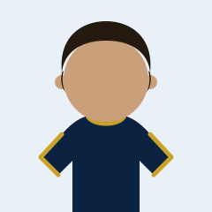
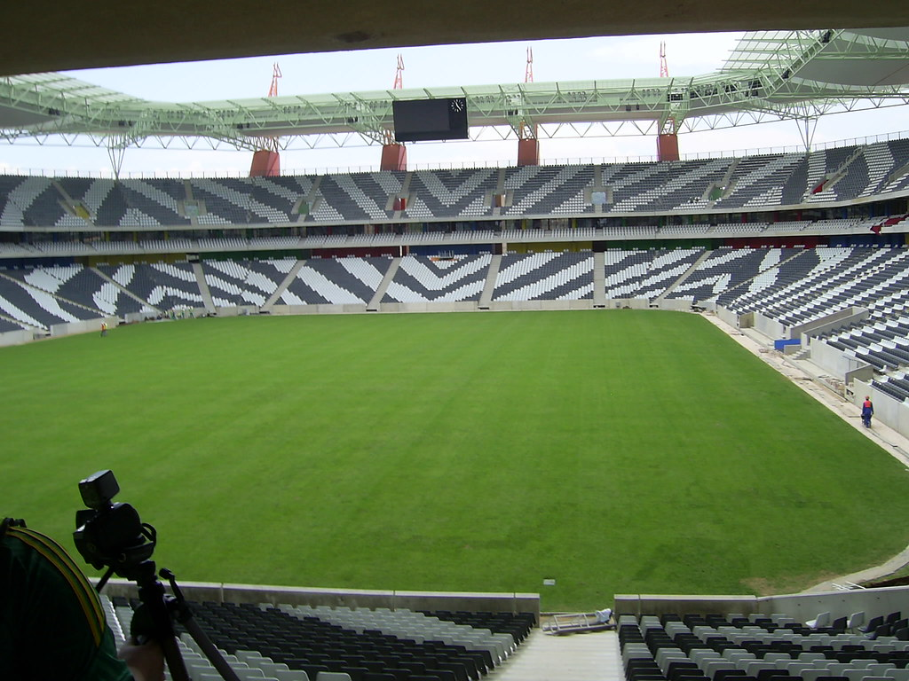

1
Álvaro Muñoz
Portero

Club Deportivo · Fundado en 1978
Cantera, primer equipo y afición unidos por un mismo escudo. 48 años representando a nuestra ciudad, partido a partido.
Nuestra historia
El Atlético Riomar nació en 1978 de la mano de un grupo de vecinos que quería que el barrio tuviera un equipo propio. Desde entonces no hemos dejado de crecer: de un único equipo senior a una estructura completa que hoy forma a más de 300 niños y niñas cada temporada.
Seguimos siendo un club amateur con vocación de familia. Cada euro que entra vuelve al césped: material, formación de entrenadores y ayudas para que ningún niño se quede fuera por motivos económicos.
En cantera priorizamos que cada jugador crezca, compita y disfrute.
Convenios con colegios locales y cuotas reducidas para familias numerosas.
Respeto al rival, al árbitro y a la afición dentro y fuera del campo.
Fundación del club por un grupo de vecinos del barrio de Riomar.
Primer ascenso a Primera Regional y estreno del Campo Municipal El Encinar.
Apertura de la escuela de fútbol base con las seis categorías actuales.
Renovación integral del campo y nueva grada cubierta para las familias.
Plantilla
Dorsal, nombre y demarcación de la primera plantilla para la temporada 2026/27.

Actualidad
Todo lo que pasa dentro y fuera del campo, de primera mano.
El equipo de Manuel Rodríguez llega con buenas sensaciones al inicio de liga tras un mes de julio muy positivo.
Leer más
El club amplía su escuela con un nuevo grupo Prebenjamín e incorpora dos entrenadores titulados.
Leer másUn acto sencillo para agradecer a jugadores, familias y voluntariado su compromiso durante el curso.
Leer másCompetición
El próximo compromiso del primer equipo y el repaso a la pretemporada.
Resultados de pretemporada
Categorías
Inscripciones abiertas todo el año. Entrenamos tres días por semana con entrenadores titulados.
Primer contacto con el balón a través del juego.
Fundamentos técnicos individuales y fútbol 7.
Iniciación táctica y primeros valores de equipo.
Fútbol 11 y primeras competiciones federadas.
Consolidación técnico-táctica y trabajo físico.
Última etapa formativa antes del primer equipo.
Gracias por confiar en nosotros
El club existe gracias al apoyo de empresas y comercios de Riomar comprometidos con el deporte base.
Patrocinador principal
Colaboradores
Tu marca en camisetas, vallas del campo y web oficial.
Contacto
Para socios, patrocinadores o familias interesadas en la escuela: estamos a un mensaje de distancia.